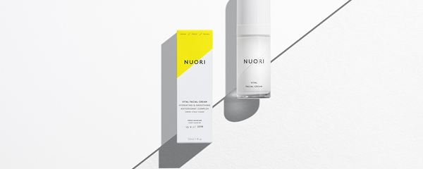
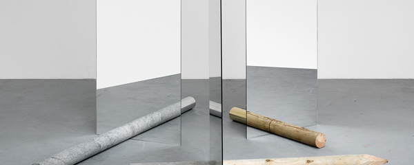

如何添加新的分类？
发布日期： 分类：教程
在添加一篇博文之前，我们需要定下来博文的分类是什么。在这个模板中，我们已经预先创建了3个分类：旅行，心情和美食。当然，100%的情况下，您是不需要这3个分类中的一个或者多个的。或许，您也想将其中的分类换成别的分类或者新增分类。那么我们首先来介绍一下如何修改、新增和删除分类。
如何添加一篇新的博文？

发布日期： 分类：教程
我们这里就介绍一种最方便，最便捷的新增博文的方式。我们通过复制的方式来新增一片文章。首先您要随便找一篇已经存在的博文。最好不要复制教程，因为这边文章比较多，删除内容起来比较麻烦。比如我们复制《关于旅行》这篇文章。
那些与美食有关的事儿？

发布日期： 分类：教程
我无法忘记最初做的黄闷鸡块，虽然只是件极小的事情，对我影响却不同其它。我得说那是一种开始，是它让我突然明白了饭菜并非为了裹腹那么简单，有些时候，人们对待美食的态度，其实也是对待生活的态度。
寺庙的美食
 发布日期： 分类：教程
发布日期： 分类：教程
“原来如此”。真是不敢相信，寺庙师傅的手艺如此精湛。记得多年前，我曾在栖霞寺吃过斋饭，那是一碗有香茹、豆芽、金针菜以及青菜的杂烩素面，那时就感觉别有味道。没想今天更大开眼界，品尝了寺庙特有的美食，直到回去的路上，口中依然留有余香。